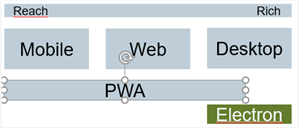
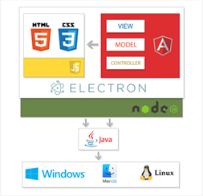
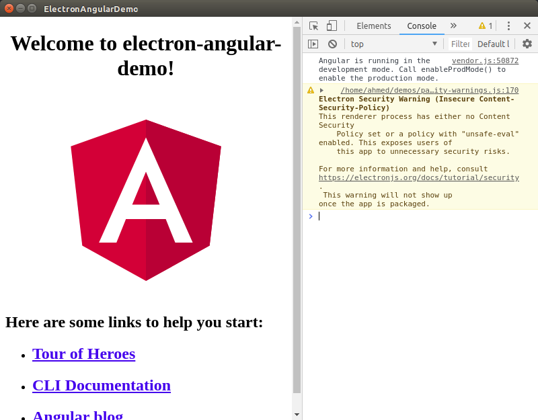

Desktop UI App with Electron – Cross Platform
The SiOUX framework provides the possibility to run WEB Apps as Native Apps. That means the WEB apps has the functionality as a native app like have access to the local file system and more.


With Electron, it’s easy to deploy your application to the desktop, but it’s still a single page application. Electron is a framework for cross-platform desktop applications using Chromium and Node.js. Other in-built features are:
- Automatic updates — enable apps to automatically update themselves
- Native menus and notifications — creates native application menus and context menus
- App crash reporting — you can submit crash reports to a remote server
- Debugging and profiling — Chromium’s content module finds performance bottlenecks and slow operations. You can also use your favorite Chrome Developer Tools within your app.
- Windows installer — you can create install packages. Fast and simple.
Install the Electron packages into an Angular project
the following command to install the latest version of Electron from npm as a development dependency:
npm install --save-dev electron@latest
{
"name": "electron-angular-demo",
"version": "0.0.0",
"main": "main.js",
"scripts": {
"ng": "ng",
"start": "ng serve",
"build": "ng build",
"test": "ng test",
"lint": "ng lint",
"e2e": "ng e2e",
"start:electron": "ng build --base-href ./ && electron ."
},
"private": true,
"dependencies": {
"@angular/animations": "~8.2.14",
"@angular/common": "~8.2.14",
…
"zone.js": "~0.9.1"
},
"devDependencies": {
"@angular-devkit/build-angular": "~0.803.20",
"@angular-devkit/build-angular": "~0.803.20",
"@angular/cli": "~8.3.20",
"@angular/compiler-cli": "~8.2.14",
"@angular/language-service": "~8.2.14",
"@types/jasmine": "~3.3.8",
"@types/jasminewd2": "~2.0.3",
"@types/node": "~8.9.4",
"codelyzer": "^5.0.0",
"electron": "^7.1.3",
"jasmine-core": "~3.4.0",
"jasmine-spec-reporter": "~4.2.1",
"karma": "~4.1.0",
"karma-chrome-launcher": "~2.2.0",
…
"ts-node": "~7.0.0",
"typescript": "~3.5.3"
}
}
Next, create a main.js file and add the following code:
const {app, BrowserWindow} = require('electron')
const url = require("url");
const path = require("path");
let mainWindow
function createWindow () {
mainWindow = new BrowserWindow({
width: 800,
height: 600,
webPreferences: {
nodeIntegration: true
}
})
mainWindow.loadURL(
url.format({
pathname: path.join(__dirname, `/dist/index.html`),
protocol: "file:",
slashes: true
})
);
// Open the DevTools.
mainWindow.webContents.openDevTools()
mainWindow.on('closed', function () {
mainWindow = null
})
}
app.on('ready', createWindow)
app.on('window-all-closed', function () {
if (process.platform !== 'darwin') app.quit()
})
app.on('activate', function () {
if (mainWindow === null) createWindow()
})
This code simply creates a GUI window and loads the index.html file that should be available under the dist folder after we build our Angular application. This example code is adapted from the official starter repository. Next, open the package.json file of your project and add the main key to set the main.js file as the main entry point:
{
"name": "electron-angular-demo",
"version": "0.0.0",
"main": "main.js",
"scripts": {
"ng": "ng",
"start": "ng serve",
"build": "ng build",
"test": "ng test",
"lint": "ng lint",
"e2e": "ng e2e",
"start:electron": "ng build --base-href ./ && electron ."
},
"private": true,
We added the start:electron script which runs the ng build --base-href ./ && electron . command:
- The ng build --base-href ./ part of the command builds the Angular app and sets the base href to ./.
- The electron . part of the command starts our Electron app from the current directory. Now, in your terminal, run the following command:
npm run start:electron
An Electron GUI window will be opened, but will be blank. In the console, you’ll see the Not allowed to load local resource: /electron-angular-demo/dist/index.html error. Electron is unable to load the file from the dist folder because it simply doesn’t exist. If you look in your project’s folder, you’ll see that Angular CLI builds your app in the dist/electron-angular-demo folder instead of just the dist folder. In our main.js file, we are telling Electron to look for the index.html file in the dist folder without a sub-folder:
mainWindow.loadURL(
url.format({
pathname: path.join(__dirname, `/dist/index.html`),
protocol: "file:",
slashes: true
})
);
__dirname refers to the current folder from which we’re running Electron. We use the path.join() method to join the path of the current folder with the /dist/index.html path. You can either change the second part of the path to /dist/electron-angular-demo/index.html or, better yet, change the Angular configuration to output the files in the dist folder without using a subfolder. Open the angular.json file, locate the projects → architect → build → options → outputPath key and change its value from dist/electron-angular-demo to just dist:
"projects": {
"electron-angular-demo": {
"root": "",
"sourceRoot": "src",
"projectType": "application",
"prefix": "app",
"schematics": {},
"architect": {
"build": {
"builder": "@angular-devkit/build-angular:browser",
"options": {
"outputPath": "dist",
Head back to your terminal and again run the following command:
npm run start:electron
The script will call the ng build command to build the Angular app in the dist folder, and call electron from the current folder to start the Electron window with the Angular app loaded. This is a screenshot of our desktop app running Angular:

Calling Electron APIs from Angular
Let’s now see how we can call Electron APIs from Angular. Electron apps make use of a main process running Node.js and a renderer process running the Chromium browser. We can’t directly access all of Electron’s APIs from the Angular app.
We need to make use of IPC or Inter-Process Communication, which is a mechanism provided by operating systems to allow communication between different processes. Not all Electron APIs need to be accessed from the main process. Some APIs can be accessed from the renderer process, and some APIs can be accessed from both the main and renderer processes.
BrowserWindow, which is used to create and control browser windows, is only available in the main process. The desktopCapturer API (used for capturing audio and video from the desktop using the navigator.mediaDevices.getUserMedia API) is only available in the renderer process. Meanwhile the clipboard API (for performing copy and paste operations on the system clipboard) is available on both the main and renderer processes. You can see the complete list of APIs from the official docs.
Let’s see an example of calling the BrowserWindow API, available only in the main process, from the Angular app. Open the main.js file and import ipcMain:
const {app, BrowserWindow, ipcMain} = require('electron')
Next, define the openModal() function:
function openModal(){
const { BrowserWindow } = require('electron');
let modal = new BrowserWindow({ parent: mainWindow, modal: true, show: false })
modal.loadURL('https://www.sitepoint.com')
modal.once('ready-to-show', () => {
modal.show()
})
}
This method will create a child modal window, load the https://www.sitepoint.com* URL inside it, and display it when it’s ready. Next, listen for an openModal message that will be sent from the renderer process and call the openModal()* function when the message is received:
ipcMain.on('openModal', (event, arg) => {
openModal()
})
Now, open the src/app/app.component.ts file and add the following import:
import { IpcRenderer } from 'electron';
Next, define an ipc variable and call require('electron').ipcRenderer to import ipcRenderer in your Angular component:
private ipc: IpcRenderer
constructor(){
if ((<any>window).require) {
try {
this.ipc = (<any>window).require('electron').ipcRenderer;
} catch (e) {
throw e;
}
} else {
console.warn('App not running inside Electron!');
}
}
The require() method is injected at runtime in the renderer process by Electron and as such, it will only be available when running your web application in Electron. Finally, add the following openModal() method:
openModal(){
console.log("Open a modal");
this.ipc.send("openModal");
}
We use the send() method of ipcRenderer to send an openModal message to the main process. Open the src/app/app.component.html file and add a button, then bind it to the openModal() method:
<button (click)="openModal()">
Open Modal
</button>
Now, run your desktop app using the following command:
npm run start:electron
You can find the source code of this demo from this GitHub repository.
Any questions left?
Except where otherwise noted, content on this site is licensed under the The Siemens Inner Source License - 1.1 .